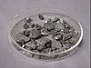

boron

Definition: Boron is a chemical element with the symbol B and atomic number 5. In its crystalline form it is a brittle, dark, lustrous metalloid; in its amorphous form it is a brown powder. As the lightest element of the boron group it has three valence electrons for forming covalent bonds, resulting in many compounds such as boric acid, the mineral sodium borate, and the ultra-hard crystals of boron carbide and boron nitride.
Source: Wikipedia
Wikipedia Page
Wikidata Page